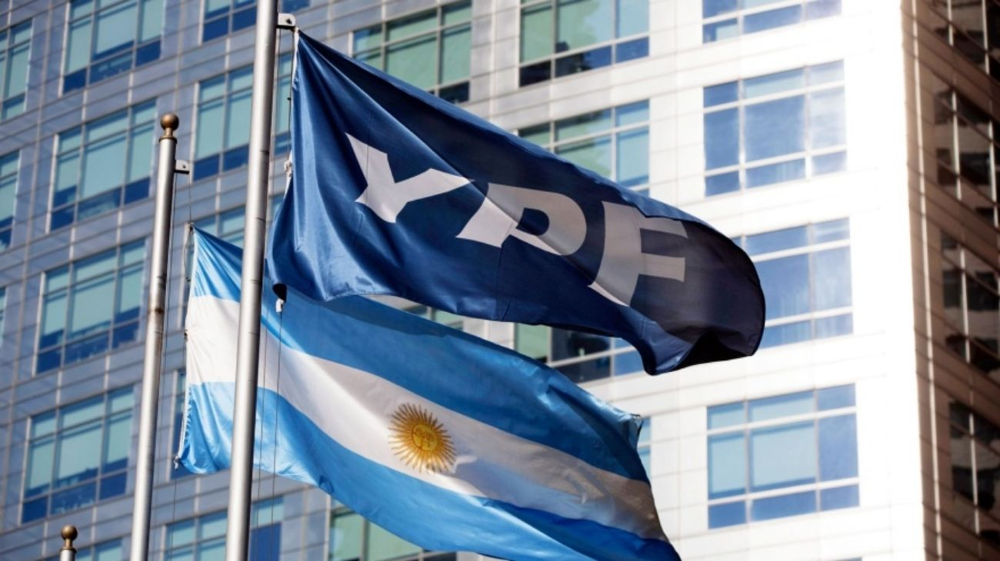

Fallo histórico a favor de Argentina: anulan la condena millonaria por YPF
Un tribunal de Estados Unidos anuló la sentencia que obligaba a Argentina a pagar US$16.100 millones por el caso YPF, en un fallo que sacudió a Wall Street: Burford Capital se hundió más del 45% y YPF trepó más del 7%. Una victoria que despeja uno de los mayores riesgos financieros que pesaban sobre el país.

Argentina acaba de ganar una de las batallas judiciales más importantes de su historia reciente. La justicia de los Estados Unidos anuló este jueves la sentencia que condenaba al país a pagar US$16.100 millones en el marco del caso YPF, el juicio que se originó tras la expropiación de la petrolera estatal en 2012 durante el gobierno de Cristina Fernández de Kirchner. El fallo es una victoria de enorme magnitud para Argentina, que durante años cargó con esa espada de Damocles sobre su cabeza: una deuda judicial de ese tamaño equivale a casi la mitad de las reservas brutas del Banco Central y representaba una amenaza concreta sobre la estabilidad financiera del país.
Para entender el origen del conflicto, hay que remontarse a 2012, cuando el gobierno de entonces decidió expropiar el 51% de las acciones de YPF que estaban en manos de la empresa española Repsol. Años después, un grupo de accionistas minoritarios de YPF —entre ellos los fondos Eton Park y Burford Capital, este último especializado en financiar litigios a cambio de quedarse con parte de las ganancias si se gana el juicio— demandaron a Argentina ante la justicia de Nueva York, argumentando que la expropiación los había perjudicado. En 2023, una jueza federal les dio la razón y fijó una indemnización de US$16.100 millones, un número que sacudió a los mercados y generó una crisis diplomática y financiera de primer orden. Desde entonces, Argentina apeló el fallo y siguió peleando en los tribunales estadounidenses.
La reacción de los mercados fue inmediata y contundente. Las acciones de Burford Capital, la firma que financió la demanda y que esperaba quedarse con una parte sustancial de esa eventual indemnización, se derrumbaron más de un 45% en Wall Street en cuestión de minutos tras conocerse el fallo. Es una de las caídas más pronunciadas en la historia reciente de esa compañía y refleja el golpe devastador que significa para su modelo de negocio perder un litigio de esta envergadura. En el otro extremo, las acciones de YPF se dispararon más de un 7% en la misma plaza bursátil, una señal clara de que los inversores interpretan el fallo como un alivio enorme para la petrolera estatal y para las finanzas argentinas en general.
El impacto para Argentina va mucho más allá de los números del día. Una sentencia de US$16.100 millones en contra hubiera sido prácticamente impagable en el corto plazo y habría complicado seriamente la estrategia del Gobierno de acumular reservas, normalizar el mercado cambiario y volver a los mercados de deuda internacionales. Con ese fallo anulado, se despeja uno de los nubarrones más oscuros que pesaban sobre el horizonte económico del país. No es el fin del litigio —el caso podría seguir en otras instancias— pero es un punto de inflexión que le devuelve a Argentina una posición mucho más cómoda en la mesa de negociación. Para el Gobierno de Milei, que viene acumulando señales positivas en el frente económico y financiero, este fallo llega como una victoria que refuerza la narrativa de un país que está dejando atrás sus peores momentos.